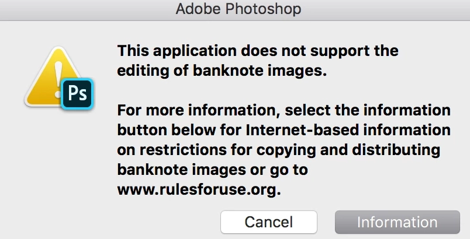
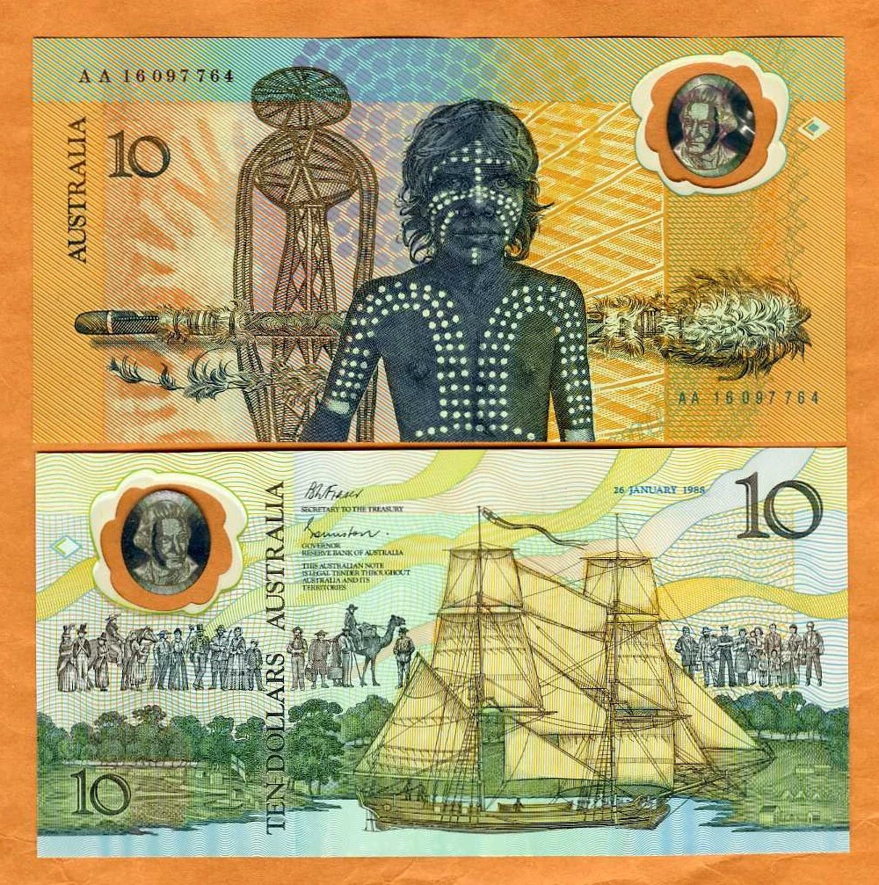

Money by Design: The Secret World of Banknote Retouching & Security Printing
Have you ever wondered why you can’t simply open a high-resolution image of a dollar bill in Adobe Photoshop? It isn't a technical bug—it’s the first line of defense in a global, multi-layered security infrastructure. Banknote design is a high-stakes convergence of fine art, cognitive psychology, and military-grade engineering designed to maintain public trust in the global economy.
1. The "Adobe Problem": Software Built to Say No
Most graphic designers rely on the Adobe Creative Cloud, but in the world of currency, Adobe is a restricted zone.

Adobe Photoshop includes the Counterfeit Deterrence System (CDS), commissioned by the Central Bank Counterfeit Deterrence Group (CBCDG).
The CDS uses algorithms to detect specialized watermarks and patterns, such as the EURion constellation (a pattern of five circles), preventing users from opening or editing detailed currency images.

To bypass these commercial restrictions and achieve micron-level precision, designers use specialized suites like Jura JSP or Koenig & Bauer’s ONE Suite. These platforms function as professional "architectural" tools, allowing for the generation of complex guilloche patterns—intersecting lines that are nearly impossible for commercial scanners to reproduce without distortion.
2. Material Evolution: From Cotton to Biaxial Polymers
The "feel" of money is one of its most critical security features. Traditionally, banknotes were printed on cotton-based paper, which is "UV-dull" (it does not glow under blacklight, unlike standard office paper). However, the 21st century has seen a massive shift in substrate technology:

- Polymer Banknotes: Pioneered by Australia in 1988, these 100% plastic notes are more durable, stay cleaner, and allow for transparent "windows" containing holographic foils.
- Hybrid Substrates: Technologies like Hybrid® and Durasafe® combine the best of both worlds, sealing a cotton core between thin polymer layers. This provides the mechanical strength of plastic while retaining the traditional, trusted "crispness" of paper.
3. The Psychology of the Portrait: Why Faces Matter
Every master banknote design features a central portrait, and the reason is deeply psychological. Human brains are hard-wired to recognize tiny errors in facial expressions. If a counterfeit portrait is "off" by even a fraction of a millimeter, it triggers a subconscious sense of "wrongness" in the user.
Master engravers like Christopher Madden spend up to ten years in apprenticeships to learn how to hand-cut these portraits into steel dies. This results in Intaglio printing, where ink is applied under such high pressure that it leaves a raised, tactile relief you can actually feel with your fingertips.
4. The Power Brokers: Who Prints the World's Money?
The production of currency is controlled by a select group of "power brokers" that dominate the global market:
- Giesecke+Devrient (G+D): A German giant leading in "smart banknotes" and sustainable "Green Banknotes".
- De La Rue: A UK-based firm that has designed over 500 banknote series globally.
- Crane Currency: The primary supplier of security paper for the U.S. Dollar for over a century.
5. What’s Next: NFTs, CBDCs, and Crypto-Banknotes
The future of money is a hybrid of physical and digital assets. We are already seeing the emergence of:
- Crypto-Banknotes: Fastex has released physical currency notes backed 1:1 by tokens, using NFC tags and NFTs to verify authenticity on the blockchain.
- CBDCs (Central Bank Digital Currencies): Institutions like G+D are developing offline digital payment systems that mimic the anonymity and convenience of physical cash in a digital format.
6. The Magic of the Human Hand: Why People, Not AI, Design Money
In an era where artificial intelligence can generate any image in seconds, the world’s most secure documents—banknotes—remain the result of thousands of hours of painstaking manual retouching and engraving. This is not merely a nod to tradition; it is a fundamental aspect of security based on the psychology of trust.
The human brain is the world’s most sophisticated authenticity detector. Research indicates that we subconsciously trust "hand-crafted" images more than machine-generated ones. Every line drawn by a master retoucher possesses microscopic "imperfections" and a unique rhythm that AI currently struggles to replicate, often producing results that are too "sterile" or mathematically averaged.
When we look at a portrait on a banknote, we perceive its "soul" through the minute nuances in the retouching of the hair, skin, and eyes. If an image is created by an algorithm, our brains often detect the "uncanny valley" effect—a subconscious sense of falsehood that is critical for identifying counterfeits.
"The nuances of the lines and dots that an engraver makes will be unique to each artist, and thus much harder to replicate than the more uniform shapes drawn on-screen." — Tony Maidment, Banknote Engraver.
Why Manual Retouching is the Quality Gold Standard
In the high-end segment of commercial retouching, the same rules apply as in currency design:
- Precision Above All: A master retoucher controls every pixel, preserving the natural texture of skin or fabric—something impossible to achieve with the automated "blurring" of AI filters.
- Consumer Trust: Clean, professional manual processing creates a premium product image that invites belief and purchase.
- Uniqueness: Every piece of work is an author’s unique perspective that emphasizes a brand’s identity rather than copying a template.
This is why leading global brands and photographers choose a personalized approach. For instance, at our studio https://yevga.com, we utilize the same principles of attention to detail and natural preservation found in modern banknote creation. We don’t just "clean" photos—we create visual content that evokes unquestionable trust at a subconscious level.